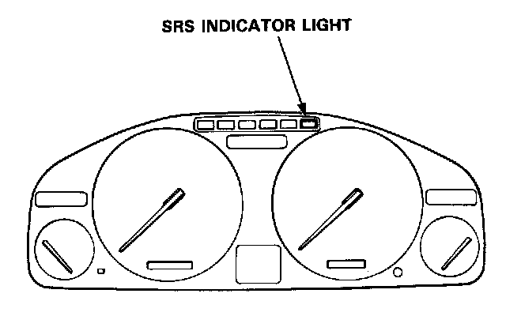

Self-Diagnostic Function
Self-diagnosis Function
The SRS unit includes a self-diagnosis function. If there is a failure in the sensors, SRS unit, inflator, or their circuits, the SRS light in the instrument panel comes ON.

As a system check, the SRS light also comes on when the ignition is first turned to the II position. If the light goes off after approximately 6 seconds, the system is OK.
If the SRS light remains on (or fails to come on in the system check mode), one of the SRS components (or the wiring/connectors in-between) is faulty.
Troubleshooting Precautions
- Always use the test harness. Do not use test probes directly on component connector terminals or wires; you may damage them or the control unit.
- When connecting any of the test harnesses to the system, push the connectors straight-in; do not bend the connector terminals.
- Before disconnecting the airbag connector(s), turn off the ignition switch and wait for at least 3 minutes to let the capacitor in the back-up circuit discharge. This will prevent a malfunction of the seat belt pretensioners.
- Before disconnecting any part of the SRS wire harness, install short connectors (RED) on the air-bag(s) and both seat belt pretensioners. After installing the short connector(s) on the airbag(s), immediately install one Short Connector "A" (Tool Number O7MAZ-SPOO2OO) on the cable reel connector (for the driver's airbag), and another on the SRS main harness connector (for the passenger's airbag). This will prevent any static electricity from triggering the seat belt pretensioners before you disconnect them - refer to "Short Connector Installation" procedure.